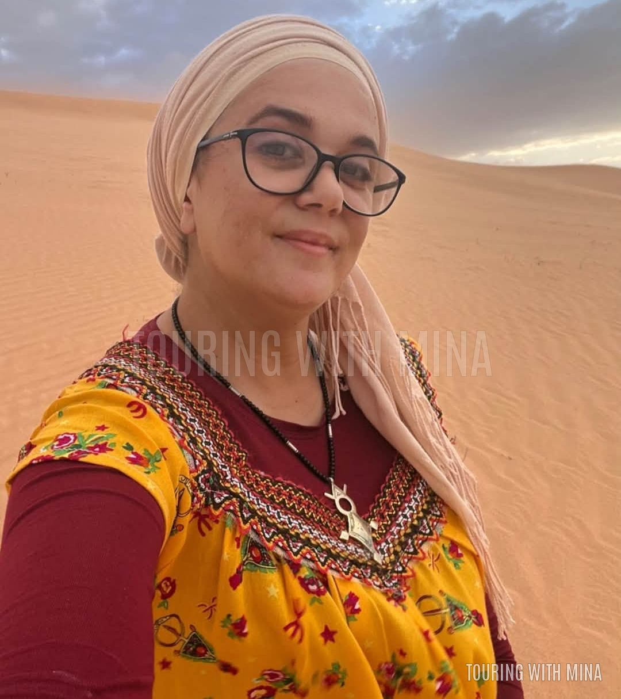

Une rencontre avec Djanet devenue un métier
Touring with Mina est née d'un coup de cœur : celui de Mina pour Djanet, ses paysages et les familles qui y vivent.

L'histoire
Mina découvre Djanet en voyageuse. Elle y revient, encore et encore, jusqu'à en faire son quotidien : accueillir des voyageurs du monde entier et leur faire vivre le désert comme elle l'a découvert, de l'intérieur.

L'équipe Imouhagh
Guides, chauffeurs, cuisiniers et musiciens : l'équipe est touarègue et connaît le Tassili depuis l'enfance. Mina les appelle sa famille. Ce sont eux qui ouvrent les pistes, allument le feu et racontent chaque lieu.

Notre façon de voyager
Des petits groupes, un rythme choisi avec vous, et le respect des lieux et des habitants. On ne laisse rien derrière nous, et on prend le temps de rencontrer ceux qui vivent ici.
Ce à quoi nous tenons
Nous vous répondons en français, en anglais et en arabe.
Sur mesure
Chaque voyage est construit avec vous, selon vos dates, votre rythme et votre groupe.
Accompagnement
Mina reste votre interlocutrice, de la première question jusqu'au retour à l'aéroport.
Respect
Des lieux, de la culture touarègue et des familles qui nous reçoivent.
Sécurité
Des chauffeurs expérimentés, des véhicules entretenus et des itinéraires que nous connaissons.
Comment se prépare votre voyage
Quatre étapes, un seul interlocuteur.
- 1
Vous nous écrivez
Par le formulaire, WhatsApp ou e-mail : vos dates, votre groupe, vos envies.
- 2
Mina vous répond
Sous 24 heures, avec un programme adapté et un devis clair.
- 3
Nous préparons tout
Dossier de visa, transferts, équipe, véhicules et matériel de bivouac.
- 4
Accueil à Djanet
L'équipe vous attend à l'aéroport. Le voyage commence dès la sortie de l'avion.
Votre voyage à Djanet commence par un message
Dites-nous vos dates et vos envies. Mina vous répond personnellement sous 24 heures.